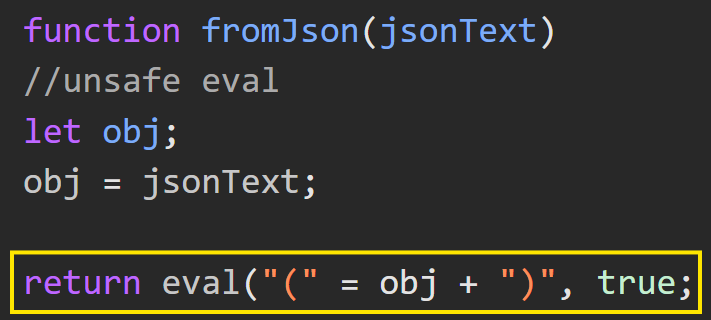
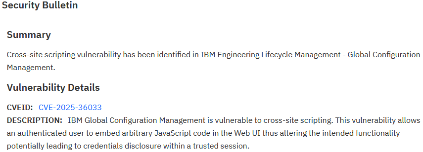
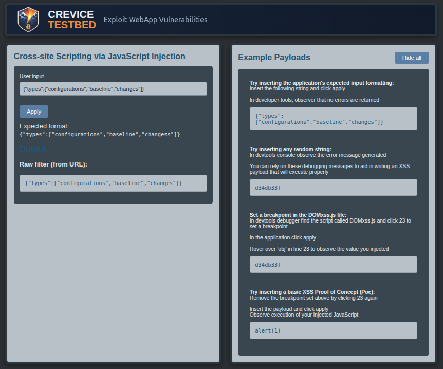

DOM-Based XSS in IBM ELM: Unsafe eval() and the Risks of Trusting JSON Input

Summary
I identified a DOM-based cross-site scripting (XSS) vulnerability in IBM Engineering Lifecycle Management (ELM) Global Configuration Management while performing security testing. The issue resulted from unsafe handling of user-controlled input passed through a URL parameter and executed via JavaScript eval().
This vulnerability was assigned CVE-2025-36033 and later addressed in an official IBM security advisory. Although the issue was remediated and publicly disclosed, public acknowledgement via their PSIRT News & Acknowledgements page was promised but not performed. I followed up twice with IBM requesting acknowledgment but haven't receive a response.

Vulnerability Overview
The application accepted input via a filter URL parameter, which was expected to contain JSON-formatted data. This input was passed directly into an eval() call on the client side without validation.
Because no enforcement ensured the input was valid JSON, the parameter could be replaced entirely with arbitrary JavaScript, resulting in a DOM-based XSS vulnerability. Exploitation was fully client-side, triggered through a crafted URL, and required only a minimal payload.
Technical Analysis
The vulnerable pattern resembled:
const filter = getParameterByName('filter');
eval(filter);Although the application expected JSON input such as:
{"field":"value"}there was no validation enforcing that structure. As a result, a simple payload such as:
alert(document.domain)executed successfully without needing to break out of any surrounding context.
The use of eval() here reflects a legacy pattern where it was historically used to parse JSON before JSON.parse() was available. This approach is now considered unsafe because it executes input as code.
The vulnerability exists because user-controlled input is executed directly using eval() without validation or parsing.
Although the application expects JSON-formatted input, it does not enforce that requirement. This removes any structural constraints on the input and allows arbitrary JavaScript to be supplied instead.
Because eval() executes input as code rather than data, no context-breaking is required, no encoding bypass is needed, and any valid JavaScript executes immediately.
Client-side controls such as Content Security Policy (CSP) and HttpOnly cookies provided partial mitigation, but didn't prevent execution within the application’s origin or the ability to issue authenticated requests.
Impact
Successful exploitation allows arbitrary JavaScript execution within the application context.
Security controls were present but incomplete. A Content Security Policy restricted loading external scripts, and some cookies were marked HttpOnly. However, these controls didn't prevent meaningful abuse. JavaScript could still open a new window to an attacker-controlled domain with cookies appended to the request, and authenticated requests to the application itself were unrestricted.
Given the application’s administrative capabilities, a realistic attack path could involve phishing an authenticated administrator, executing a DOM-based payload through a crafted link, and issuing authenticated requests to perform privileged actions or modify security controls.
I didn't fully weaponize this path. Exploitation would likely require handling CSRF protections such as token acquisition, but the behaviors observed suggest a viable path to privilege escalation.
Discovery & Methodology
This issue was identified using DAST tooling supported by manual application mapping to ensure coverage.
I manually validated the execution context and exploitability to confirm it was a real-world issue and to provide IBM context that encouraged remediation.
- Verified that
alert(document.domain)executed in the application’s origin rather than within a sandboxed context - Confirmed that no additional protections prevented execution despite the presence of CSP
- Demonstrated data exfiltration potential by crafting a payload that opened a new window to an external server and appended available cookies to the request
- Observed the request using a temporary Python HTTP server to validate outbound communication
This validation process focused on confirming real-world exploitability rather than relying solely on automated findings, ensuring the behavior wasn't constrained by sandboxed execution contexts, or other mitigations that can obscure true impact.
Remediation
IBM remediated the issue by removing unsafe evaluation of user-controlled input.
Effective mitigations for this class of vulnerability include eliminating use of eval(), using JSON.parse() with strict validation, enforcing expected input schemas, and maintaining defense-in-depth controls such as CSP.
Disclosure Timeline
- May 14, 2025 – Vulnerability reported to IBM
- June 27, 2025 – Test fix provided
- Late June 2025 – Fix validated
- August 8, 2025 – Security fix (iFix018) released
- January 27, 2026 – Public advisory published
Note on Attribution
This vulnerability was discovered and responsibly disclosed as part of professional application security testing. While the issue was remediated and later published, attribution wasn't included despite follow-up requests.
Recognition of security research contributions helps encourage responsible disclosure and strengthens collaboration between vendors and the security community.
Practice and Emulation
I emulated this vulnerability in Crevice Testbed to provide a hands-on scenario for understanding DOM-based JavaScript injection.
While the lab is not an exact reproduction of the original application, it mirrors the behavior that made the real issue exploitable: user-controlled input is passed into a client-side execution path without validation. The code path and trust assumptions are intentionally very similar to the real vulnerability.
The lab is designed to help testers practice identifying unsafe client-side patterns, validating execution context, and recognizing how minimal payloads can lead to real execution when expected input formats are trusted but not enforced.
